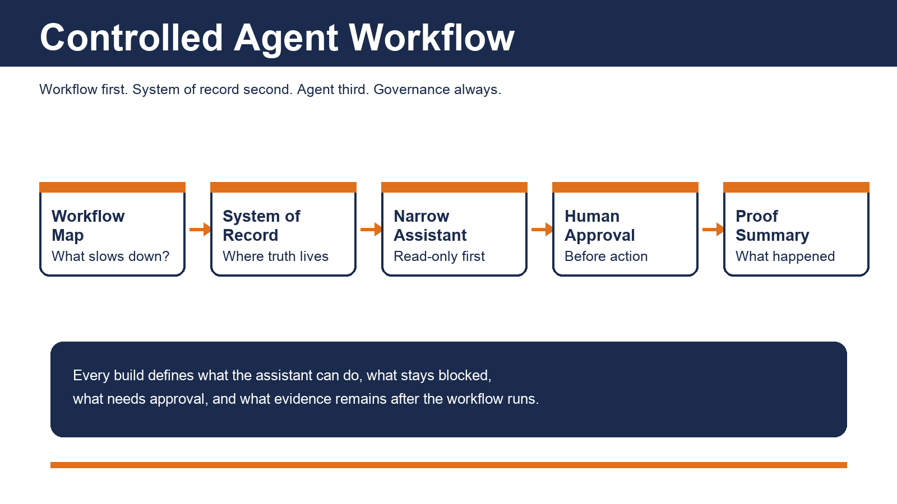

Workflow Automation Consulting
For businesses that know a workflow is broken but are not sure what to automate first. Map one workflow, identify the source of truth, check vendor/API access, and define where accountability proof is needed.
McPherson AI helps businesses make automated work accountable: map the workflow, confirm the source of truth, and put clear human approval and proof around AI agents, workflows, and business automations before anything goes live.
Workflow first. Source of truth second. Automation third. Accountability always.

For businesses that know a workflow is broken but are not sure what to automate first. Map one workflow, identify the source of truth, check vendor/API access, and define where accountability proof is needed.
Built from 16 years in restaurant operations: food cost, labor leaks, shift execution, audit readiness, weekly operating reviews, and manager handoffs.
Observa turns AI agents, workflows, and business automations into business-readable accountability reports: what ran, what evidence exists, what needs review, and what should not be assumed.
The offer is not "add a chatbot." It is a controlled workflow build: one process, one source of truth, narrow permissions, human approval where it matters, blocked actions by default, and readable accountability after the workflow runs.